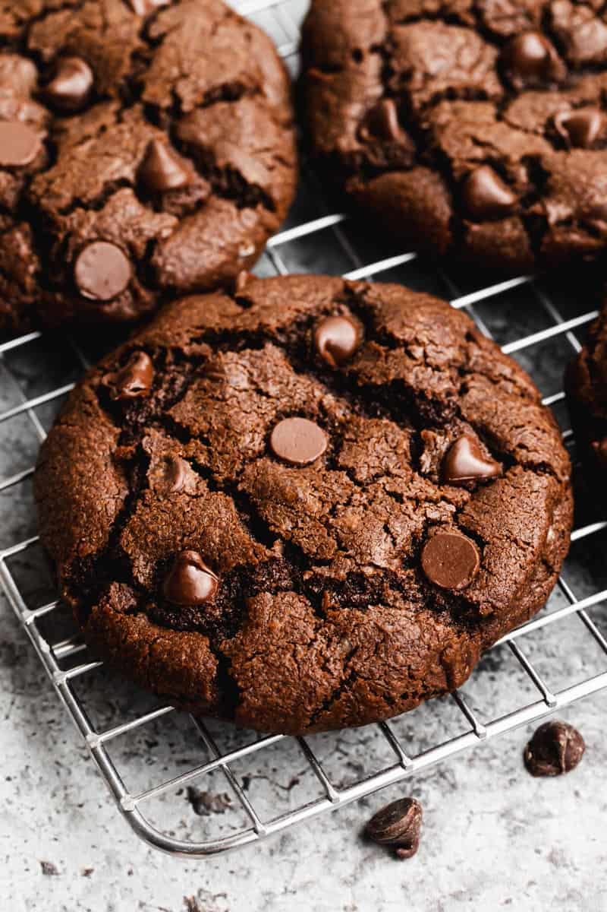

Double Chocolate Chip Cookies

Description
Our favorite Double Chocolate Chip Cookies recipe yields perfect chocolate cookies that are crisp on the outside
and thick and chewy in the center.
Ingredients
- 1 1/2 cups all-purpose flour (190 g)
- 1/2 cup unsweetened cocoa powder (43 g)
- 1/2 teaspoon baking powder (2 g)
- 1/2 teaspoon baking soda (2 g)
- ¼ teaspoon salt (1 g)
- 3/4 cups butter , softened (170 g)
- 1/2 cup granulated sugar (100 g)
- 3/4 cups light brown sugar , firmly packed (150 g)
- 1 egg , room temperature
- 1 teaspoon vanilla extract (5 ml)
- 1 cup chocolate chips , semi-sweet or milk chocolate (175 g)
Steps
- Preheat oven: to 375 F. Line a cookie sheet with parchment paper or silplat mat.
- Dry ingredients: flour, cocoa powder, baking powder, baking soda and salt in medium bowl;
set aside.
- Wet ingredients: butter, sugar and brown sugar in a separate mixing bowl and beat for a few
minutes until creamed together. Add egg and vanilla and mix until combined.
- Combine: Gradually mix in the flour mixture until combined. Stir in chocolate chips.
- RefrigerateCover bowl and refrigerate dough for 30 minutes (or up to 3 days stored in an
air-tight container).
- Scoop doughusing a ¼ cup measuring cup to make them uniform in size. Place on a baking
sheet 2 inches apart.
- Bakefor 12 to 15 minutes or until set around the edges (don't over bake!). Allow to cool
for several minutes on the baking sheet before transferring to a wire rack to cool completely
Home